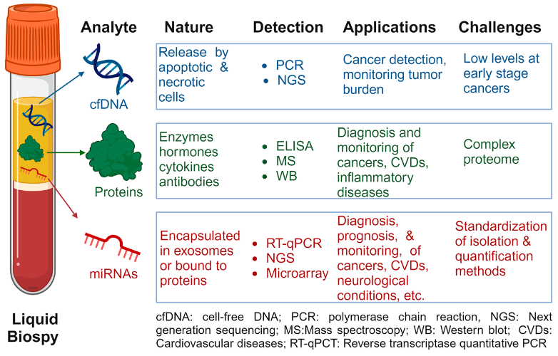

被AI包揽的2024年Nobel Prize
2024-10-10T13:39:01+08:00 | 8 分钟阅读 | 更新于 2024-10-10T13:39:01+08:00

到目前为止，诺贝尔基础科学的两大奖项都颁给了AI创新者：
生理学或医学奖：维克多·安布罗斯（Victor Ambros）和加里·鲁夫昆（Gary Ruvkun）发现微小RNA（microRNA），揭示了基因调控的新机制，对疾病治疗具有潜在重要意义。
物理学奖：约翰·霍普菲尔德（John Hopfield）和杰弗里·辛顿（Geoffrey Hinton）因在人工智能和机器学习领域的开创性工作获奖。
化学奖：大卫·贝克（David Baker）、德米斯·哈萨比斯（Demis Hassabis）和约翰·朱默（John Jumper）因蛋白质结构预测和设计的进展而获奖。
朋友圈里大家都在惊讶，怎么物理给了机器学习而非凝聚态这种基础物理理论，David Baker这样的生物学大牛怎么拿的是化学奖，他的受众明明在中国是生物和基础医学领域的学者，而生理学奖项怎么就颁给了久远的已经脱离学术热点的miRNA。
其实我觉得也算是意料之中并没有很惊讶，因为往年的生理学Nobel也都是颁给疾病领域有突出贡献的生物学理论，David Baker大家都知道早晚夺冠，但AlphaFold也确实还没应用到疾病的层面，截至目前，还没有完全由AI设计的药物正式上市，只能说它是一个强大的化学结构预测的工具有潜力应用于医疗，而不是成熟的医学应用。这也是为什么诺奖平均要等上20年左右，这样工作的价值才能被证明，时间会告诉世人由它衍生了多少有价值的研究。
而2020年底DeepMind公司才开源的alphaFold2才经过4年，就已经夺得化学诺奖桂冠，已属难得。可见结构生物学行业的地震早已发生，迭代的技术和应用已经在4年里说明了其价值。
有趣的诺奖传承性
a. 蛋白质一级序列决定三维结构
20世纪50年代，生物化学家Christian Anfinsen提出安芬森法则（Anfinsen’s dogma），告诉我们氨基酸包含一个内部编码，告诉它如何折叠成蛋白质。他由此夺得了1972年的化学奖，距离Watson和Crick凭借DNA双螺旋结构的发现获得1962年生理学奖正好10年，Crick可是在得诺奖前4年提出了奠基后100年生物学研究的大名鼎鼎的中心法则。
随着时间的推移，蛋白质折叠又衍生出新的问题。能否根据氨基酸序列预测蛋白质的结构？折叠的“密码”是什么？长达50年间，得益于计算机技术的迅猛发展，AI技术在10年内的突飞猛进，如今，2024年的化学奖隔空对话72年的化学奖，是的，蛋白质一级序列确实很大程度上决定三维结构，而且还可以实现预测，alphaFold3 PairFormer模型的增强算法甚至可以做到99%以上的准确率。
即使这个命题可能不那么完美，临床已经发现病人体内的基因存在沉默突变，即使蛋白质的氨基酸序列是正确的，也会患上如囊性纤维变性的疾病。沉默突变有可能影响翻译速率导致蛋白质形成错误的空间形状，使其不能发挥正常的功能。有趣的是，如果沉默突变发生在mRNA的3’UTR区域，可能会改变miRNA的结合效率，这就引发了miRNA治疗的话题，miRNA也许也是一种新的治疗靶点和治疗mimics，即今年生理学诺奖，这何不也是一种对72年诺奖"缺陷"的补充？但这些并不算最重要，重要的是对于计算生物学家来说相信一级序列确实决定三维结构，已经让他们走了很长一段路，并做出了99%可靠的突破，而这99%甚至足够指导临床药物发现了，核心问题已经解决，剩下的1%已然不需要再去纠结，不然还要临床实验干嘛？传统实验还要考虑实验误差呢。
b. “物理学诺奖转码”
今年物理学诺奖给出的解释
利用统计物理学的基本概念设计出了人工神经网络，这种网络的功能类似于联想记忆，能在大型数据集中发现规律。
可以简单理解为，物理学推动了机器学习技术的发展。似乎与传统转角石墨烯，量子计算相比，目前更为重要。
- 关联记忆与能量最小化：Hopfield网络展示了如何使用物理学中的能量最小化方法来解决优化问题，这在机器学习中非常广泛，如反向传播算法的优化。物理学工具帮助提高了机器学习算法的性能，使模型能够更快收敛到最佳解。
- 神经网络与统计力学的结合：Hinton的Boltzmann机不仅基于物理学中的能量函数，还使用了热力学平衡的思想。这使得神经网络可以处理更复杂的学习任务，如无监督学习和生成模型，从而推动了深度学习技术的发展。
怎么看怎么觉得是对化学奖的补充，没有反向传播算法就没有Alphfold反向运算衍生的RFdiffusion。
c. RNA家族商业价值
2006年诺贝尔生理学或医学奖颁给了安德鲁·法尔（Andrew Fire）和克雷格·梅洛（Craig Mello），他们发现了RNA干扰（RNA interference, RNAi）机制，这是由小干扰RNA（siRNA）引导的基因沉默过程。RNAi是一个自然的调控机制，通过特定的双链RNA分子降解靶mRNA，从而抑制特定基因的表达。距离1993年诺奖，RNA剪接（RNA splicing）的复杂过程及其调控方式过了13年，人们还在RNA的发现中。
没想到过了30年，诺奖还能颁给ncRNA家族的miRNA，这距离第一个miRNA的发现也过了30年。不过这30年，随着研究的深入，更多科学家发现miRNA不仅限于调控发育，还在胚胎与个体发育、细胞命运及肿瘤发生发展过程中发挥重要的调控作用。比如肺癌中低表达的miR-34具有肿瘤抑制的特点，利用“miRNA替代治疗”方案（MicroRNA Replacement Therapy），即通过化学合成miR-34a mimics在脂质体转染试剂的作用下递送到小鼠体内，可以发挥抑制非小细胞肺癌的作用。
相较于siRNA多用于基础研究，比如被广泛用于基因敲低（knockdown）实验，以研究特定基因的功能，甚至用于高通量筛选以鉴定潜在的药物靶点而言，miRNA的医学应用前景确实更大，按诺奖的逻辑是当之无愧的医学奖，所以这个诺奖更像是对06年的补充。
miRNA诊断
已有研究揭示了miRNA在多种疾病中的潜在作用，包括癌症、心血管疾病和神经退行性疾病等。但此类基础研究成果距离商业化临床应用仍有一定距离，整体看来，miRNA诊断前景大于疾病治疗。包括血液、唾液和尿液在内的多种体液中均可发现miRNA，并且在体液中miRNA是可定量的且非常稳定。出于这些原因，miRNA作为非侵入性生物标志物正成为包括癌症在内几乎所有人类疾病的理想候选生物标志物。这个和cfDNA的甲基化、片段化末端特征诊断用于癌症早筛的研究相似，一搜果然有研究在结合做。 
血液早筛 The Circulating Biomarkers League: Combining miRNAs with Cell-Free DNAs and Proteins, Int. J. Mol. Sci. 2024, 25(6), 3403
-
高稳定性：miRNA在生物体液中具有很高的稳定性，能够在极端条件下（如pH变化、温度变化以及反复冻融循环）保持其完整性，使得miRNA在诊断领域中更为可靠。
-
非侵入性检测：与传统的组织活检相比，miRNA可以通过血液、尿液等体液中的检测实现，属于一种非侵入性或微创的检测方法，从而提高了患者的舒适度和依从性。
-
早期检测：miRNA可以在疾病出现临床症状之前检测到，从而实现疾病的早期干预。例如，在癌症检测中，miRNA的表达水平变化能够提示肿瘤的早期形成。
基于miRNA的癌症筛查正成为一个不断发展的市场：
1、胃癌诊断领域，专注于miRNA技术的觅瑞集团在2024年5月递交港股IPO申请，其全球首款且唯一获批的血液胃癌分子诊断试剂产品已在新加坡、欧盟、美国等地获相关认证。
2、骏实生物已有获批产品，7种微小核糖核酸（microRNA）检测试剂盒（PCR荧光探针法），主要用于对肝细胞肝癌患者进行动态监测以辅助判断疾病进程或治疗效果。
3、晋百慧生物与命码生物的获批的检测试剂盒产品则分别针对肠癌与胰腺癌检测。
核酸药物治疗
目前，mRNA、siRNA、反义寡核苷酸（ASO）等已成药，再聚焦至小核酸药物领域，从原理上看，小核酸药物在理论层面具备调节任意基因表达的能力，预示着其可直接作用于上游，精准调控致病蛋白质的表达水平。它规避了因蛋白质复杂结构而引发的一系列挑战，同时也突破了蛋白质成药性方面的固有局限。
随着新型的化学修饰、递送系统的推出，核酸药物的开发成功率有望提升。核酸药物不再仅局限于罕见病领域，已成功进军慢病市场，肿瘤市场亦有突破可能。
1、诺华研发的靶向PCSK9 siRNA降胆固醇疗法于2023年中国上市。
2、阿斯利康和Ionis Pharmaceuticals联合开发的ASO疗法Eplontersen获FDA批准上市。
总结
诺贝尔奖的评选标准之一是“对人类有重大影响的发现”，上述分析也已经说明，诺奖有种传承性，基于之前的结果做出重大进展的（alphafold2），能补充一个大版图且比之前结果更有应用前景（miRNA），是其他奖项的奠基石发现且属于基础理论迁移的（机器学习），这么看也理解了诺奖的逻辑。期待有一天诺奖能准确地把自然科学的发展史摘录下来，到时候估计长生不老也是有希望的。